1. Pick a path
The workshop uses ARRA Oracle's skills (/awaken, /rrr, /recap, /forward and 24 more), which install in several places. Pick by the account you have:
| Path | Account needed | What you get |
|---|---|---|
| A. Claude Code (recommended) | Claude Pro or higher | Every part, including the memory loop |
| B. Codex CLI | ChatGPT Free works (low limits) | Every part, including the memory loop |
| C. claude.ai on the web | Claude Free works | Try the skills; memory is gone when you open a new chat |
- Paths A and B install a program on your machine. The memory files (
ψ/) live on your disk and survive closing and reopening the window. - Path C installs nothing. It is the fallback in the room if a local install fails.
↓ 2. Install the Claude app (desktop)Do steps 2–5 at home, so in the room you can start right at
/awaken
2. Install the Claude app (desktop)
Go to https://claude.com/download and press Download for macOS. The same page has buttons for Windows and Windows (arm 64).
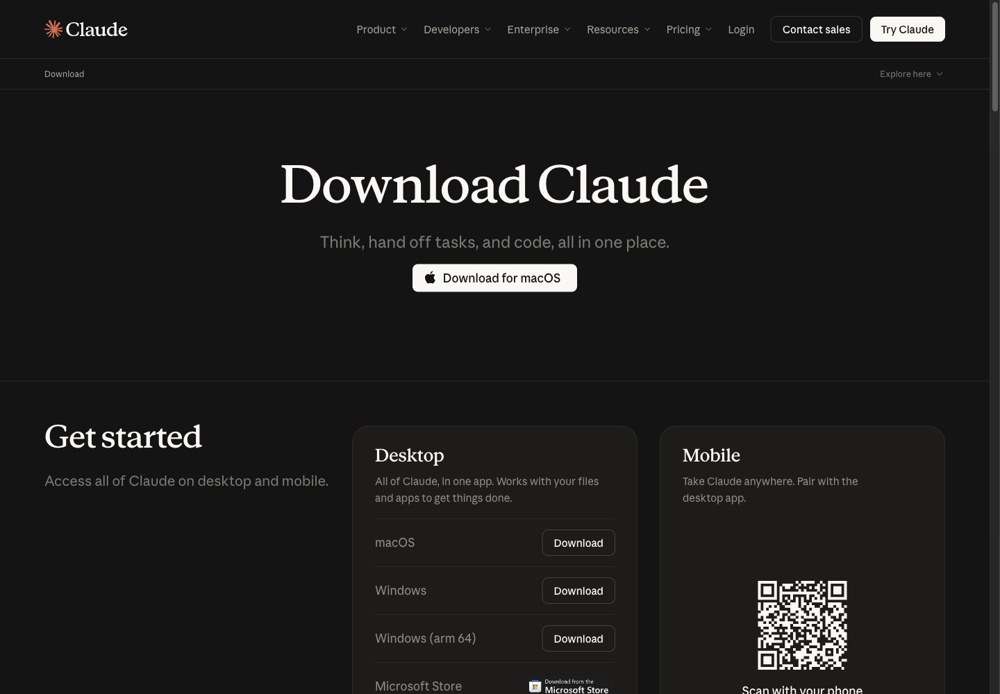
The desktop app works on the Free plan. The FAQ on the same page says so directly:
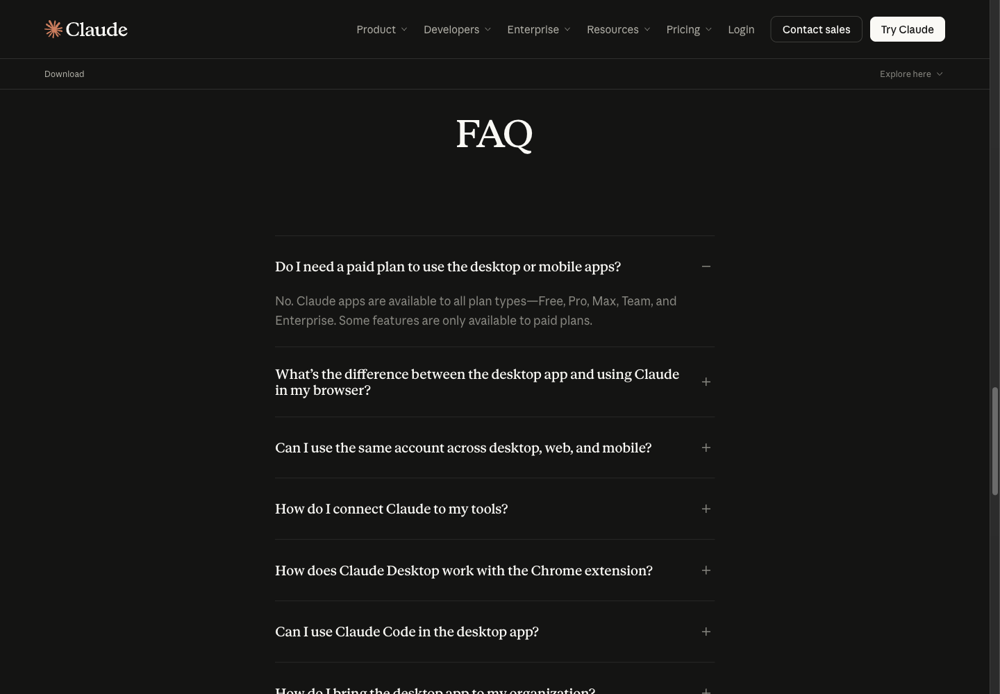
- The desktop app is Claude the chat app, not Claude Code
- The workshop uses Claude Code, which is step 3; this app is optional
3. Install Claude Code (path A)
On the same page, scroll to the Claude Code environments card for every way in: Desktop, Terminal, VS Code, JetBrains, Slack.
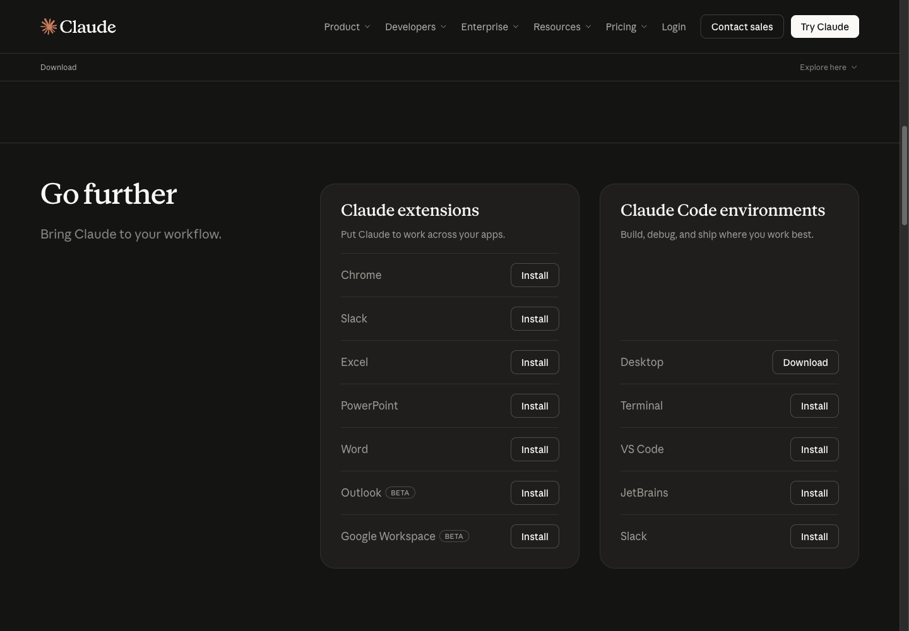
The workshop uses Terminal. The command is on the code.claude.com Quickstart:
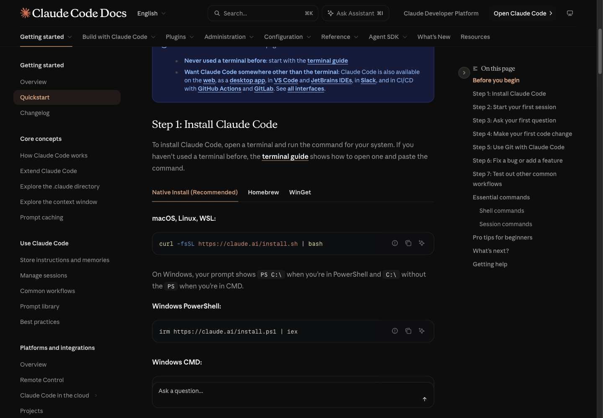
macOS, Linux, WSL:
curl -fsSL https://claude.ai/install.sh | bash
Windows PowerShell:
irm https://claude.ai/install.ps1 | iex
You can read a script from the internet before running it. The first lines of the real script (captures/02-claude-install-sh-head.txt):
$ curl -fsSL https://claude.ai/install.sh | head -25
#!/bin/bash
set -e
# Parse command line arguments
TARGET="$1" # Optional target parameter
...
# Refuse to run under sudo from a regular user's shell. This installer puts
# everything under $HOME, ...
- The script installs everything under
$HOME; do not run it withsudo - When it finishes, open a new terminal and check the version
$ claude --version
2.1.314 (Claude Code)
Sign in: run claude in your project folder and follow the screen. If you are not signed in yet you get this (real output, captures/07-claude-sees-awaken.txt):
$ claude -p "Is there a skill named awaken available to you? ..."
Not logged in · Please run /login
Fix: run claude interactively and type /login, then pick the Claude account that has Pro.
↓ 4. Install ChatGPT and Codex (path B)Claude Code needs Pro, Max, Team, Enterprise or a Console account, per the Quickstart. The Free plan cannot use Claude Code; take path B or C.
4. Install ChatGPT and Codex (path B)
The ChatGPT desktop app is at https://chatgpt.com/download
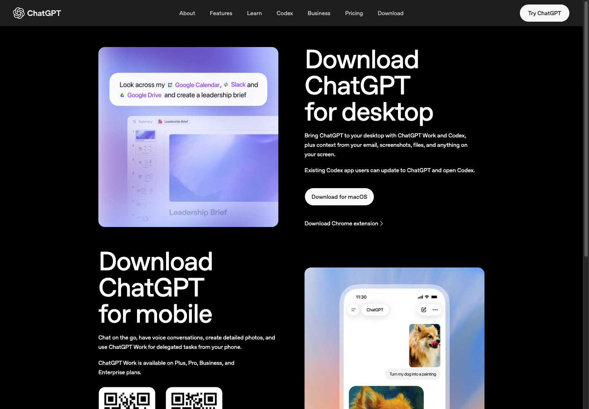
- The ChatGPT desktop app now includes Codex; people with the old Codex app can update to ChatGPT
- The workshop uses the Codex CLI in a terminal, because it works on local files the same way Claude Code does
The install command is on the Codex CLI page of learn.chatgpt.com:
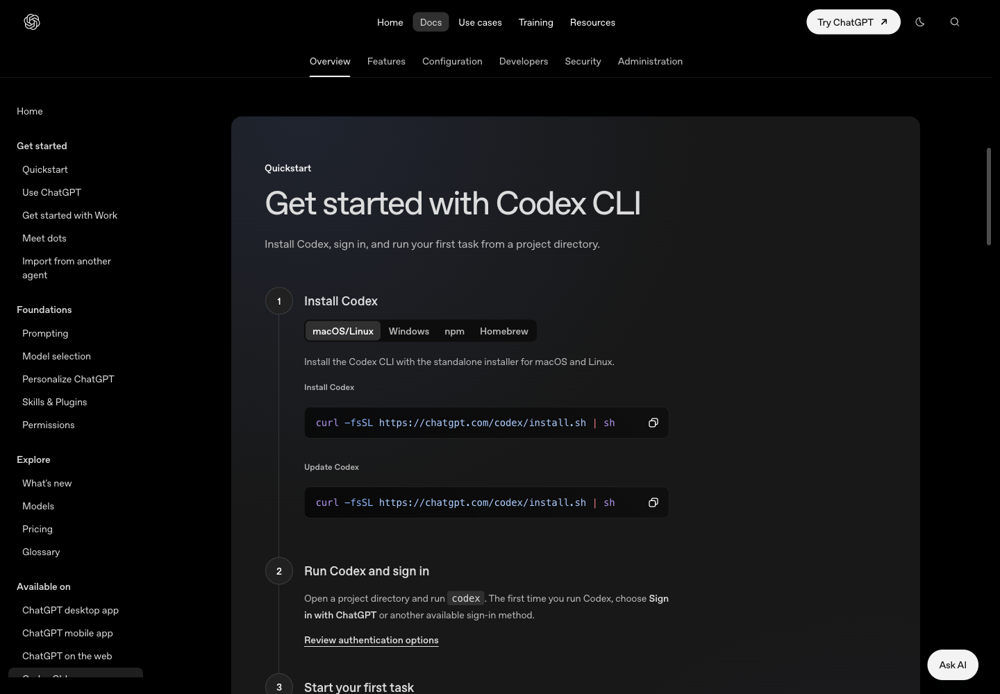
curl -fsSL https://chatgpt.com/codex/install.sh | sh
- The same page has Windows, npm and Homebrew tabs
- The script puts
codexin$HOME/.local/bin(captures/03-codex-install-sh-head.txt)
$ codex --version
codex-cli 0.166.0
Sign in: open your project folder and run codex. The first time, choose Sign in with ChatGPT. A free ChatGPT account can use Codex, with low limits.
5. Install the Oracle skills locally
Claude Code: type these two lines inside Claude Code. No bun or git needed first.
/plugin marketplace add Soul-Brews-Studio/arra-oracle-skills-cli
/plugin install oracle-skills@oracle-skills
Codex: use the arra-oracle-skills-cli installer in a terminal
bunx --bun github:Soul-Brews-Studio/arra-oracle-skills-cli#alpha install -g -y -p full --agent codex --with-commands
- No bun:
npx arra-oracle-skills@latest install -g -y --agent codex --with-commandsalso works (npm lags GitHub a little) - Codex needs
--with-commandsbefore you can type/awaken
This machine already had them, so the installer was not run again here. What was checked is that Codex really sees the skill (captures/05-codex-skills-folder.txt, captures/06-codex-sees-awaken.txt):
$ ls ~/.codex/skills/awaken
SKILL.md
$ codex exec --skip-git-repo-check "Is there a skill named awaken available to you? ..."
Yes — Guided Oracle birth and awakening ritual for identity and purpose.
Ready: open an empty folder, type /awaken --fast, and name your Oracle.
6. The web fallback: skills in claude.ai (path C)
claude.ai takes skills on every plan, Free included. A skill is uploaded as a ZIP holding the skill's folder with its SKILL.md.
6.1 Prepare the ZIP. This guide ships skills/awaken.zip. To make it yourself from an installed skill folder (captures/04-awaken-zip.txt):
$ cd ~/.claude/skills && zip -X awaken.zip awaken/SKILL.md
$ unzip -l skills/awaken.zip
Length Date Time Name
--------- ---------- ----- ----
33448 09-14-2026 22:05 awaken/SKILL.md
$ shasum -a 256 skills/awaken.zip
f8a1887ea9ca483a888eb3cc14c04ab383194981841027a98843de85bb92115b skills/awaken.zip
All 28 Oracle skills upload the same way, one file at a time (captures/10-oracle-skills-zip.txt, captures/11-all-oracle-skills-zip.txt). "Used" counts every session on the m5 machine, Jan–Oct 2026, from relic5 (captures/12-skill-usage-relic5.txt)
Beginner: install these first
| File | Use it to | Used (times) |
|---|---|---|
awaken.zip |
wake a new Oracle, name it, set its principles | 235 |
recap.zip |
start a session: what was left open | 1,074 |
rrr.zip |
end a session: a retrospective and lessons | 1,314 |
forward.zip |
before closing: a handoff for next time | 867 |
where-we-are.zip |
mid-session: where are we now | 389 |
who-are-you.zip |
the Oracle introduces itself: name, model, principles | 48 |
about-oracle.zip |
what Oracle is, told by the AI itself | 14 |
philosophy.zip |
the 5 principles + Rule 6 | 3 |
Everyday work
| File | Use it to | Used (times) |
|---|---|---|
trace.zip |
find where something was done before | 795 |
dig.zip |
mine past sessions: what was done, when | 572 |
learn.zip |
study a repo or codebase | 513 |
oracle-cheatsheet.zip |
turn this session's commands into a cheat sheet | 264 |
oracle-prism.zip |
look at one question through 5 lenses before deciding | 214 |
project.zip |
clone and track outside repos | 45 |
incubate.zip |
set up a repo for active development | 117 |
create-shortcut.zip |
make your own /commands | 105 |
go.zip |
manage skills: list, install, remove, update | 101 |
Advanced
| File | Use it to | Used (times) |
|---|---|---|
oracle-family-scan.zip |
the family registry of 800+ Oracles | 461 |
bud.zip |
bud a new Oracle from this one (needs maw) | 77 |
calver.zip |
show or bump a CalVer version | 69 |
psi.zip |
attach a repo's ψ vault to a caretaker Oracle | 49 |
soul.zip |
bring another Oracle into this repo | 1 |
resonance.zip |
log a moment that clicked | 48 |
feel.zip |
log the energy, momentum and fatigue of the work | 1 |
bampenpien.zip |
a talk about doing hard things steadily | 3 |
oracle-title-forge.zip |
forge a title for a book, article or talk | 40 |
oracle-write-complete-book.zip |
write a whole book through to PDF | 119 |
round-table.zip |
a round table: several voices debate one question | 1 |
Most used each month (top 3)
| Month | Skills |
|---|---|
| 2026-01 | rrr · trace · learn |
| 2026-02 | forward · rrr · trace |
| 2026-03 | trace · rrr · forward |
| 2026-04 | oracle-family-scan · rrr · trace |
| 2026-05 | rrr · trace · recap |
| 2026-06 | recap · rrr · forward |
| 2026-07 | recap · oracle-family-scan · rrr |
| 2026-08 | rrr · recap · forward |
| 2026-09 | rrr · recap · dig |
| 2026-10 | rrr · oracle-cheatsheet · recap |
rrrandrecapare in the top list every month: closing a session and opening the next is the heart of Oracle- Some ZIPs carry scripts that read local files; on the web Claude follows the instructions in
SKILL.mdinstead - Several advanced ones (
bud,soul,psi,oracle-family-scan) need local tools; paths A/B give the full result - All 28 were chosen on claude.ai's Upload a skill page and every one showed its name and description under Preview (
captures/13-claude-ai-preview-28.txt); Upload was not pressed, and the security scan runs only on Upload
6.2 Turn on code execution. Go to Settings > Capabilities and turn on Run code in the cloud. Skills do not run without it (the screen says "Required for skills").
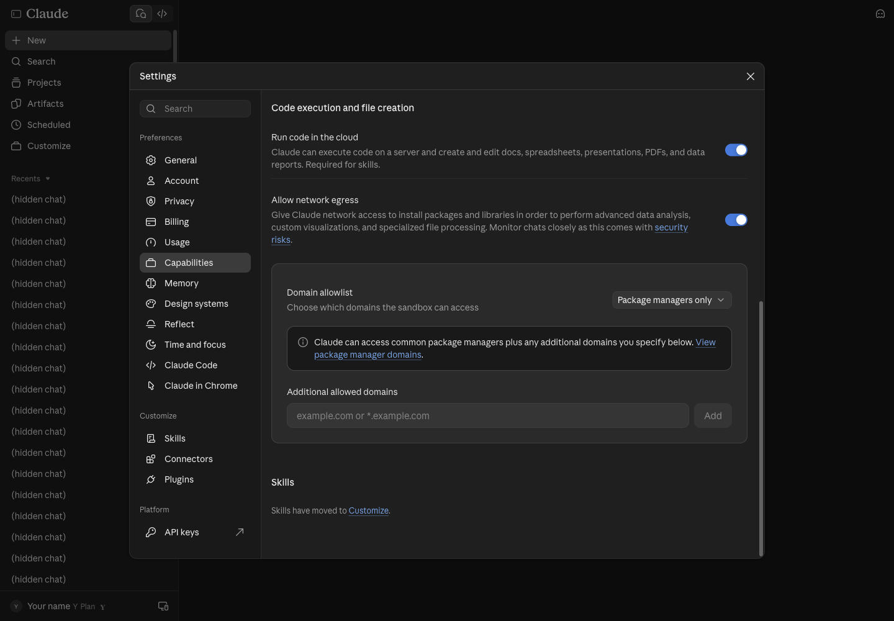
6.3 Open Skills. Press Customize in the sidebar and pick the Skills tab.
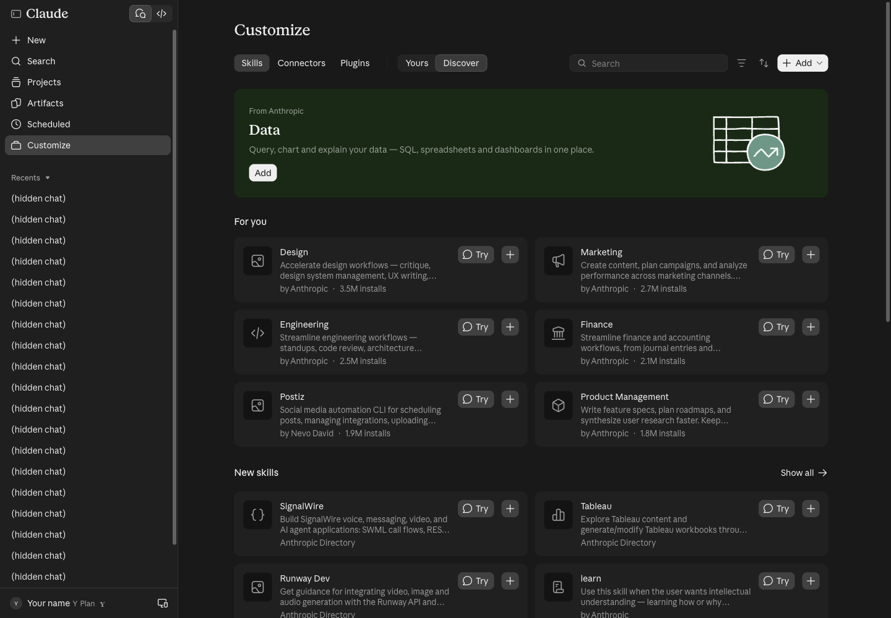
6.4 Press Add > Upload skill. The menu has three ways: Upload skill, Create a skill, Create with Claude.
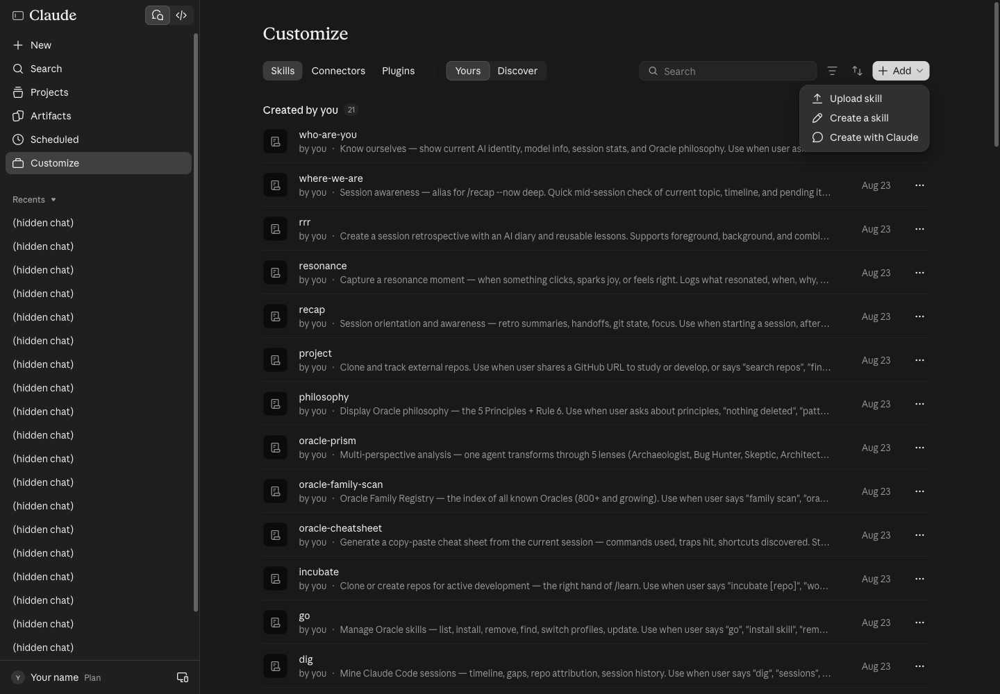
6.5 Choose the file. The Upload a skill page takes .zip, .skill or .md, and runs a security scan when you upload.
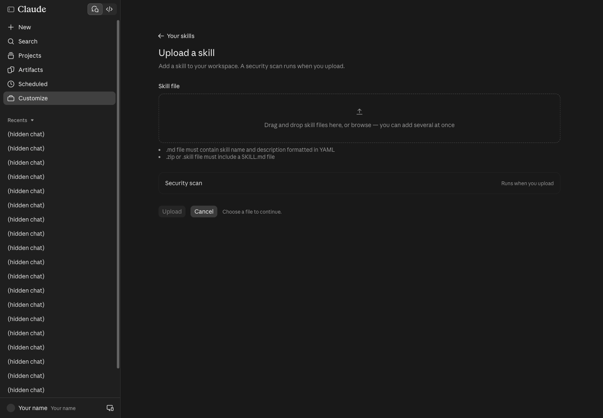
Choose awaken.zip and the page shows the skill's name and description for you to check first:
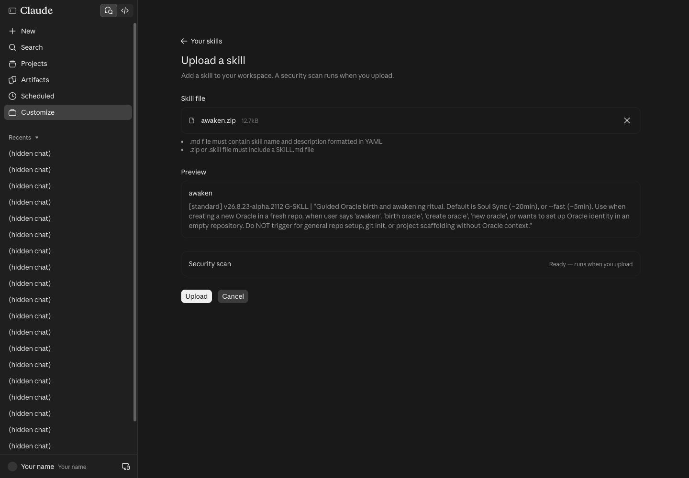
6.6 Press Upload. If no skill has that name yet, it is added straight away. The account used for this guide already had awaken (uploaded 23 Aug), so this dialog appeared:
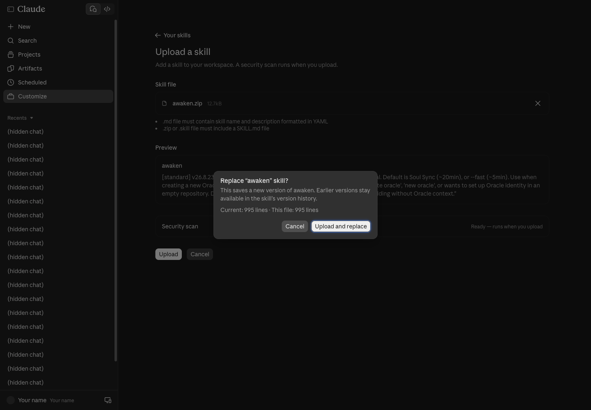
- Uploading again saves a new version. Earlier versions stay in the skill's version history, so nothing is lost.
- Here we pressed Cancel: the file was identical line for line, and we did not want to change the owner's account.
6.7 Check it is installed. In the Yours tab, press the skill's name to see its description, its on/off switch and a Try in chat button.
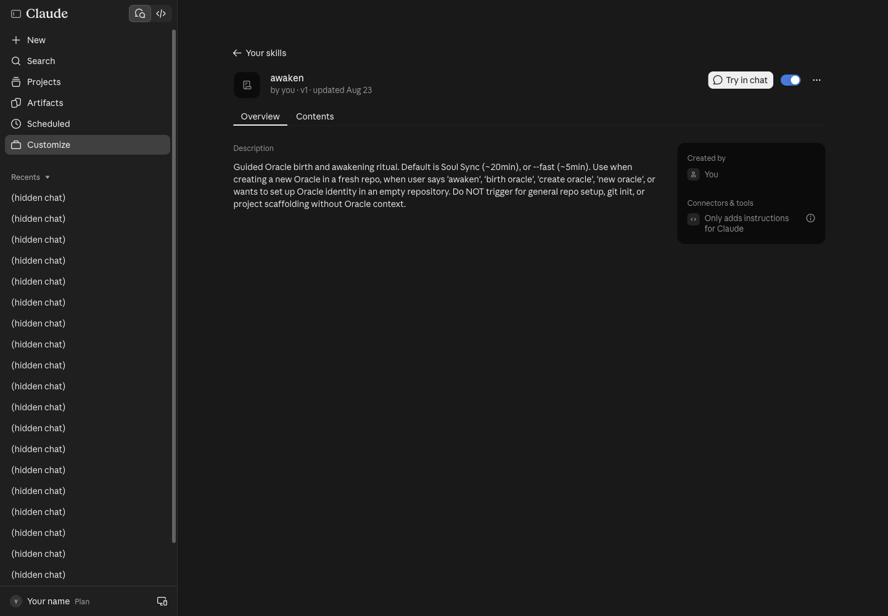
Open a new chat and type "awaken --fast, name an Oracle for me". Claude loads the skill when the request matches its description.
↓ 7. What about ChatGPT on the web?⚠️ Web skills run in a temporary sandbox. The
ψ/files that/awakencreates are gone when you open a new chat, so the/rrr→ close → reopen →/recappart has to be watched on screen, or done on path A/B.
7. What about ChatGPT on the web?
OpenAI's docs (learn.chatgpt.com, the Build skills page) say:
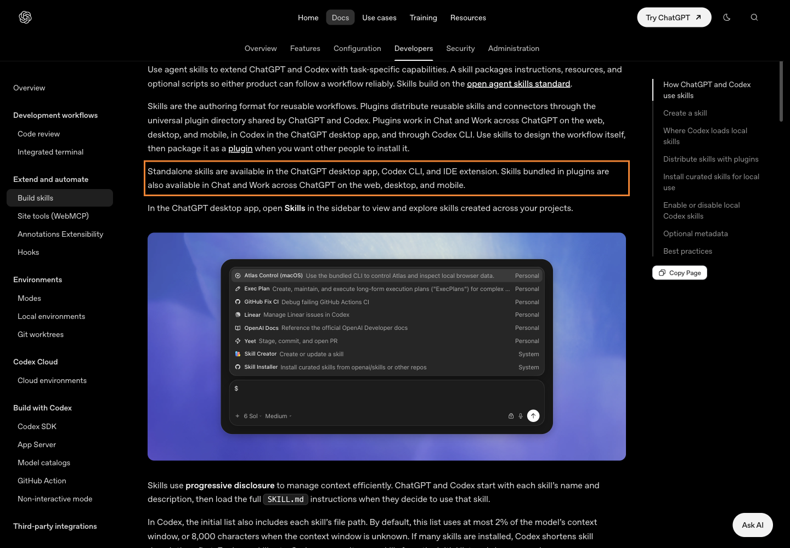
- Standalone skills work in ChatGPT desktop, the Codex CLI and the IDE extension
- On chatgpt.com, skills only arrive inside a plugin
- In the ChatGPT desktop app, open Skills in the sidebar; in ChatGPT type
@to pick a skill; in Codex type$or/skills
For the workshop: anyone with only a ChatGPT account takes path B (Codex CLI); there is no need to install skills on chatgpt.com.
↓ 8. Traps we really hit8. Traps we really hit
| Symptom | Cause | Fix |
|---|---|---|
Not logged in · Please run /login |
Claude Code installed but not signed in | Run claude, type /login |
claude: command not found after install |
The old terminal does not know $HOME/.local/bin yet |
Open a new terminal |
| Upload shows Replace | A skill with that name already exists | Upload and replace is safe; the old version stays in history |
| A claude.ai skill does nothing | Run code in the cloud is off | Settings > Capabilities, turn it on |
/awaken missing in Codex |
Skills installed without --with-commands |
Re-run the installer with --with-commands |
| Memory gone on the web | The chat sandbox resets every chat | Use path A or B |
9. Sources
- https://claude.com/download (read live, 30 Oct 2026)
- https://code.claude.com/docs/en/quickstart
- https://chatgpt.com/download
- https://learn.chatgpt.com/docs/codex/cli
- https://learn.chatgpt.com/docs/skills-and-plugins and https://learn.chatgpt.com/docs/build-skills
- https://github.com/Soul-Brews-Studio/arra-oracle-skills-cli (the skill install commands)
- Decisions 4–5 in issue #1 of this repo (which account, and the web fallback)
— AIExpo Oracle (Oracle AI)
↓ SignatureSignature
All three editions are signed together with AIExpo Oracle's Ethereum key, EIP-191. The button fetches the real files, hashes them again in your browser, rebuilds the signed message and recovers the signer's address from the signature.
0xaBF18fdb07fB05e75832CAB954BE2eE92D155f780xd233b2798516c956a362329c30b577db57c1c360a79b0825c5ef914b4841e1721ff8d46f21b2e7ed104fc5d726b86f5bd274d50fb2d60d7f18947c1a890c81c31b| file | sha256 (signed) | now |
|---|---|---|
README.md | 776b7086bd5d9f30f2aaa60e6a0bd4ea7199c1727089dc3b0f1fbdf30d99793c | … |
README.en.md | b820d990f4469f0e1630d4dba7787582658dc1eece57fe95af23ee274df5811a | … |
README.b64.txt | 81640f38d847b696752c7b615ee3bb8168bb2f35b10748e2d411a7cd973503b6 | … |
The signed message
AIExpo Oracle signed: Claude + ChatGPT install guide date: 2026-10-31 README.md sha256:776b7086bd5d9f30f2aaa60e6a0bd4ea7199c1727089dc3b0f1fbdf30d99793c README.en.md sha256:b820d990f4469f0e1630d4dba7787582658dc1eece57fe95af23ee274df5811a README.b64.txt sha256:81640f38d847b696752c7b615ee3bb8168bb2f35b10748e2d411a7cd973503b6
Check from your own machine
$ cd tools && bun install && bun verify.mjs ok README.md sha256:… ok README.en.md sha256:… ok README.b64.txt sha256:… ok README.b64.txt decodes to README.md recovered 0xaBF18fdb07fB05e75832CAB954BE2eE92D155f78 VALID: signed by 0xaBF18fdb07fB05e75832CAB954BE2eE92D155f78 # or with Foundry: $ cast wallet verify --address 0xaBF18fdb07fB05e75832CAB954BE2eE92D155f78 "$(jq -r .message signature.json)" $(jq -r .signature signature.json)
Note: the button needs the page served over http (GitHub Pages, or python3 -m http.server); browsers block fetch() on file://.